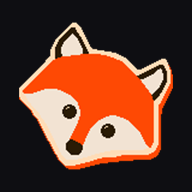
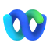
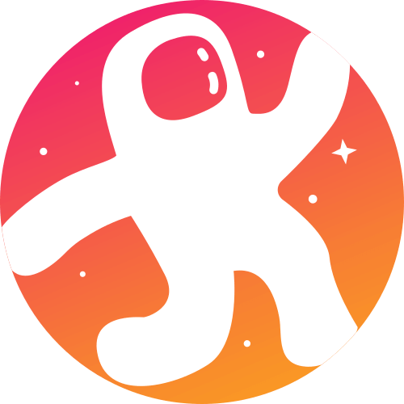

Make it yours
Choose a theme, change the CSS, or build a custom overlay. Shape your chat and alerts to fit your stream.
Bring messages from YouTube, Twitch, TikTok, Facebook, Kick, and more into one dashboard. Make it your own with custom overlays, alerts, text-to-speech, and automation.
Conecte Facebook, YouTube, Twitch, Zoom, Instagram, TikTok e outras plataformas em um único painel.
Exiba mensagens selecionadas na transmissão com temas e animações personalizáveis.
Build triggers and actions in the visual Event Flow editor, or set up chat commands and timers.
Celebrate follows, memberships, donations, and other supported events with animations and sounds.
Converta mensagens de chat em fala com serviços TTS gratuitos e premium.
Envie automaticamente mensagens de uma plataforma para outras com o chat entre plataformas.
Minijogo Battle Royal e ferramentas de interação para divertir seu chat.
Crie enquetes interativas, votações e sorteios, todos com temas personalizáveis.
Start with ready-made overlays and settings. Go further with your own designs, integrations, and hosting.
Conecte-se com o público em todas as suas plataformas favoritas











Mais de 100 plataformas compatíveis!
Ver a lista completa →Receba ajuda imediata da comunidade e do desenvolvedor
Obtenha o aplicativo ou a extensão, conecte suas fontes e adicione seu overlay.